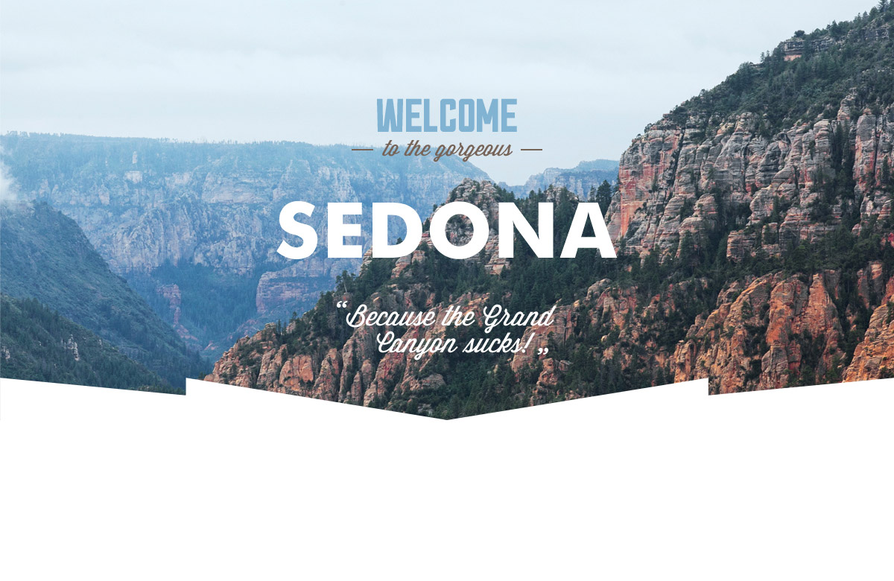

Sedona
Седона - небольшой городок в Аризоне,
заслуживающий большего!
Причины
Рассмотрим 5 причин, по которым Седона круче, чем Гранд Каньон!
-
Настоящий городок
- № 1 -
Седона - не аттракцион для туристов, там течет своя жизнь
-
Там есть мост дьявола
- № 2 -
Да, по нему можно пройти! Если конечно вы осмелитесь
-
Небольшая площадь
- № 3 -
Все достопримечательности находятся очень близко
-
Красивая дорога
- № 4 -
Ехать в Седону из Лас-Вегаса совсем не скучно!
-
Мало туристов
- № 5 -
Большинство едет в Гранд Каньон и толпится там
Условия
-
Жилье
Рекомендуем пожить в настоящем мотеле, все как в кино!
-
Еда
Всегда заказывайте фирменный бургер, вы не разочаруетесь!
-
Сувениры
Не только китайского, но и местного производства!
Бронирование
Заинтересовались?Укажите предполагаемые даты поездки,
и мы покажем вам лучшие предложения гостиниц в Седоне
Как до нас добраться